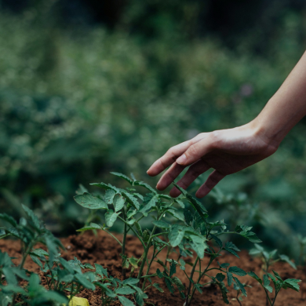

PLANER
HISTORIK
TIPS
LOGGA IN
Mina sidor

Lägg till ny plantering:
Planta:
Datum:
Lägg till
Dina Planerade Planteringar:
Gurka
15 April 2024
box 1
TA BORT
Dina Planerade Planteringar:
Gurka
15 April 2024
box 2
TA BORT
Gurka
15 April 2024
box 3
TA BORT